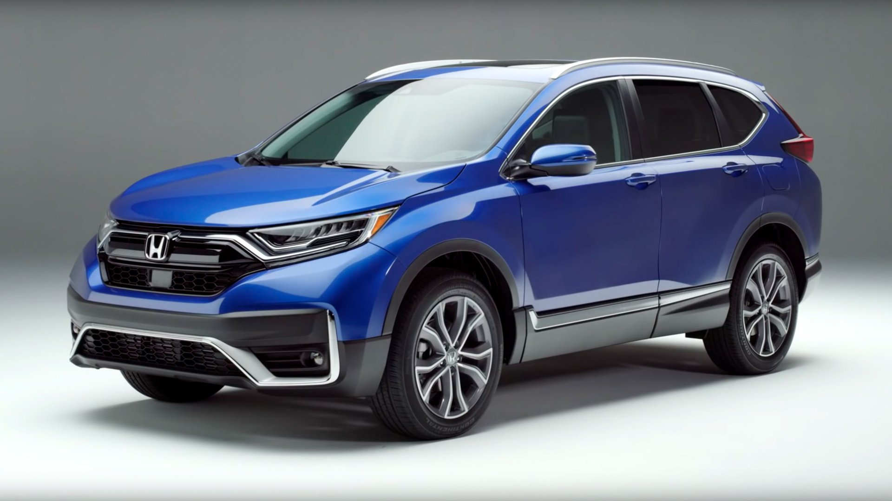
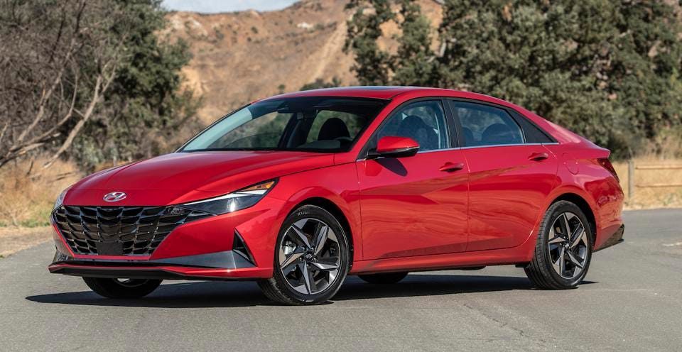
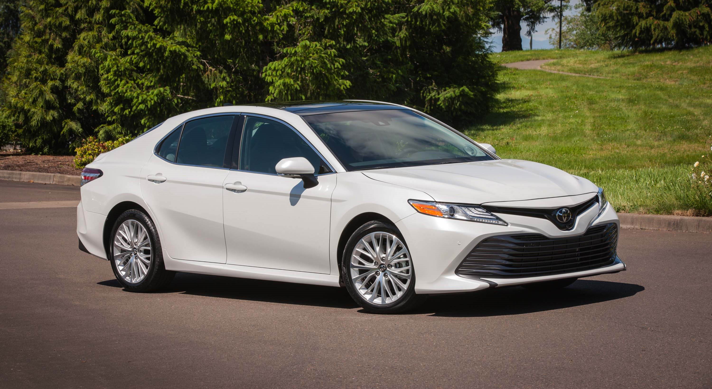
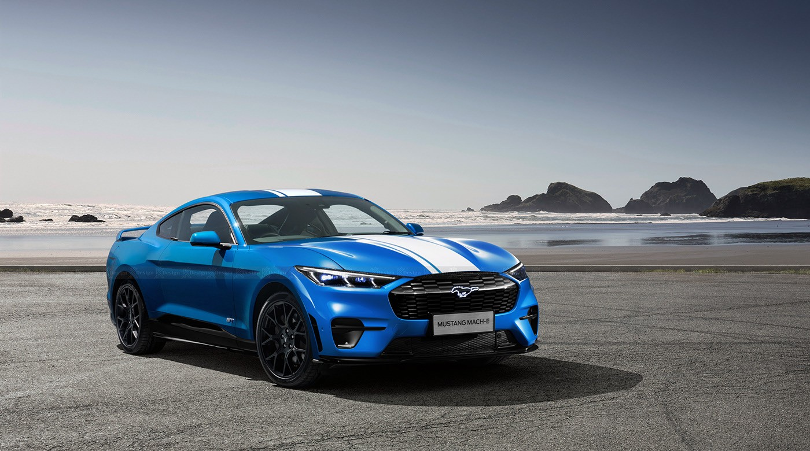
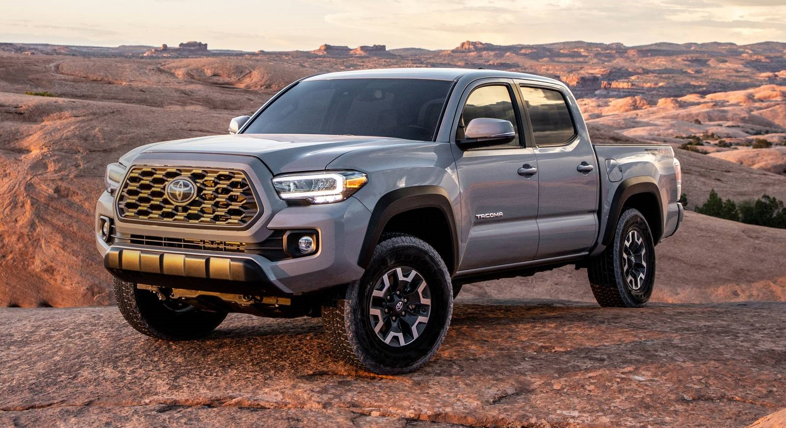
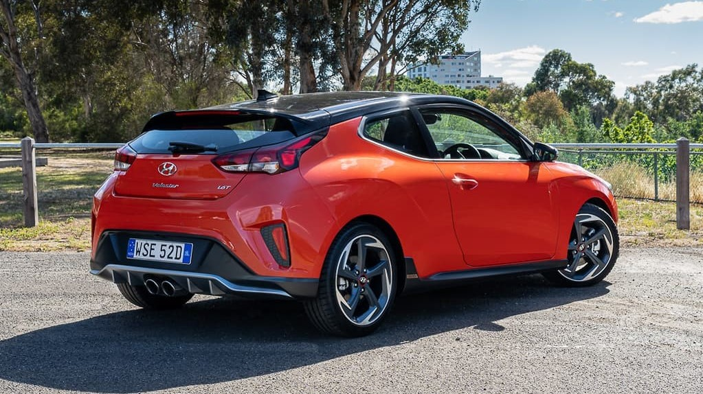
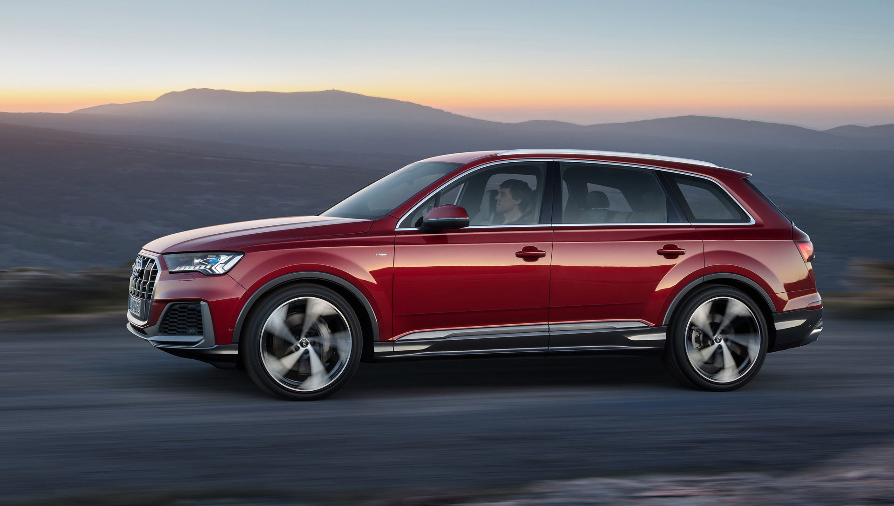

20%Discout off
all Used Cars
Used Cars For Sale
We’ll help you buy used with confidence
KissCars have the best used cars in the market. and have great idea of what to present to you that will suit your Liking
Shop great deals on popular used cars
$20k - $40k
Top Used SUV
Jeep Wrangler
Other popular SUVs
Toyota 4Runner
Toyota RAV4
Lexus RX 350
Chevrolet Tahoe
$15k - $30k
Top Used Hybrid
Toyota Prius
Other popular Hybrids
Toyota Highlander Hybrid
Toyota Camry Hybrid
Toyota RAV4 Hybrid
Lexus RX 450h
$20k - $35k
Top Used Sedan
Toyota Camry
Other popular Sedans
Honda Accord
Honda Civic
BMW 3 Series
Dodge Charger
$40k - $50k
Top Used Coupe
Ford Mustang
Other popular Coupes
Chevrolet Corvette
Dodge Challenger
Porsche 911
Chevrolet Camaro
$15k - $20k
Top Used Truc
Toyota Tacoma
Other popular Trucks
Ford F-150
Chevrolet Silverado 1500
Ram 1500
GMC Sierra 1500
$20k - $30k
Top Used Hatchback
Nyundai
Other popular Hatchbacks
Mazda 3
Subaru Impreza
Volkswagen Golf GTI
Honda Fit
$40k - $65k

Top Used Electric Car
Tesla Model 3
Other popular Electric Cars
Tesla Model X
Ford Mustang Mach-e
Nissan Leaf
Chevrolet Bolt EV
$67k - $75k
Top Used Luxury
Audi Q7
Other popular Luxury
Mercedes-Benz GLC-Class
Mercedes-Benz E-Class
BMW 7 Series
Audi A6
Buying a used car
If you've come here looking for a great deal on a used or certified pre-owned (CPO) car, truck, SUV for sale, then you're in the right place. KissCars has everything you need to know about finding and buying the best cheap used car near you. At KissCars we offer used car dealership listings and sales reviews, loan information, expert reviews, consumer car reviews, car cost comparisons (based on factors like condition, body style, mileage and trim level), vehicle appraisal calculators, images and videos, technical features and specs, user forums and more.
View all of KissCars' used inventory, containing hundreds of thousands of used automobiles, trucks and SUVs for sale with special offers, appraise your current vehicle for sale or trade-in value, and research the car of your dreams. You can limit your search to certified pre-owned vehicles for sale and be a click away from articles by our experts that will give you the best shopping and buying tips and advice. Let's take a closer look at each of these aids to easier used-car shopping.
Just use the search bar at the top of the page to browse pre-owned autos for sale from popular makes such as Ford, Honda, Toyota, Chevrolet, Hyundai, Nissan, Acura and Jeep. Or select a body style with Kisscars' curated lists of the most popular sedans, hybrids, SUVs, hatchbacks, wagons, coupes, convertibles, minivans or pickups. The inventory tool allows you to cast a much wider net than simply visiting your local dealership's website. Start with the make and model of the vehicle that you're interested in and refine your search by used auto price, distance, model year and mileage. If you're looking for specific options or features, a certain trim level or a specific color, there are more advanced search filters available, including engine type, fuel type, drivetrain, powertrain, airbags, air conditioning and much more. After you find the automobile you're interested in, select the listing to check out the VIN details page for that vehicle and get more information. There you'll find a description of the vehicle from the dealer, vehicle features and options, contact information for that dealership, dealer reviews and a ballpark insurance estimate.
Quick guide to buying a used car
All you need to know in 5 easy steps
Buying a used car is one of the smartest financial decisions you can make. You pay less for the automobile and avoid the depreciation that new-car buyers face the moment the vehicle rolls off the dealer's lot. Buying used has a number of other advantages as well. You will pay less for registration and insurance. Also, the margin for a discount may be greater when you buy a pre-owned automobile. And if you purchase the vehicle from a private party, you will likely get an even better price than you would at a dealership.
KissCars has an in-depth 10-step guide to buying a used car, but this article streamlines the process into five essentials for people on the go. You also can print out this article or save it on your smartphone and use it as a checklist as you're shopping.
1. Research your prospective car.
The used-car market is like a huge haystack, and while it may seem tough to find that needle, a bit of online research cuts the legwork and speeds up the process considerably. The good news is that you're already on the right page to start. From here, you can either input the car you want or scroll to the "Select a Make" section and click on an automaker you're interested in. You'll then get a list of cars to choose from. And on the left side of the inventory page, you'll find several ways to filter the choices.
The next thing to do is get an idea of maintenance costs on any car you're considering. Proper maintenance is especially important on a used car since it may not have a warranty to protect it if anything breaks down. People buy used vehicles as a way to save money but often overlook the cost of maintenance, which might end up pushing them beyond the limits of their budget. The car's owner's manual, which is often available online, will tell you what you need to know about maintenance services and intervals. A phone call to a dealership service department or a trusted independent repair shop will get you pricing information. You also can check resources such as RepairPal.
2. Get your financing in order.
Once you find the car you want, you'll want to move fast so it isn't sold out from under you. So it's a good idea to get your financing set up before you begin searching for your car. If you're paying cash, there is little to do except make sure you have the funds available to withdraw cash or get a cashier's check when it's time to do the deal. If you're paying all cash for a used car from a private party, consider doing the deal in a public place. If you are financing the vehicle, it is a good idea to get preapproved for a loan. This way you'll know your purchasing budget and the interest rate for which you qualify. Some lenders won't offer a loan if the vehicle is passed a certain age or if it has too many miles. The limitations will vary by lender. In this case, your next move might be to apply for a personal loan. Just be aware that those interest rates are typically higher than for auto loans.
3. Figure out where to shop for your car.
There are a number of places to purchase a used auto. Here's a quick rundown: CarMax offers no-haggle pricing and cars that are in good condition, but its prices are a bit higher than you'll find elsewhere. Private-party sellers have lower prices and can be negotiated with more easily, but the burden is on the buyer to get the car inspected. Major dealerships sell certified pre-owned cars that are in excellent condition and backed by factory warranties. This option will appeal to buyers who want to minimize the risks of buying used and are willing to pay extra for it. Independent used-car lots are another alternative but can vary wildly on price and the condition level of their cars.
4. Test-drive and inspect the vehicle.
Once you've narrowed the field down to a couple of candidates, it's very important to thoroughly check out their condition and take them for a test drive.
A thorough vehicle inspection can shed light on potential problems or tell you whether the car has been in an accident. Don't hesitate to bring your mechanic to see the car or to request a mobile inspection. Take the car for a spin to listen for any unusual noises and to see if you like the way it drives. If you are an audiophile, now is also the time to test-drive the audio system.
A vehicle history report from services such as AutoCheck, Carfax or the National Motor Vehicle Title Information System is worth the money and could help tip the scales in favor of one car over another. Pro tip: Check the National Highway Traffic Safety Administration (NHTSA.gov) website to see if the vehicle you're considering is under an active safety recall.
5. Negotiate and close the deal.
Don't stress out over a little bit of haggling. If you've done your homework on the car, you will have the information you need to negotiate. You should be able to determine a fair price for the car you've settled on by appraising the vehicle and getting its True Market Value (TMV®), also known as the average price paid for the vehicle in your area. Make sure you input the correct miles and choose the applicable options. KissCars' TMV tool will show you what you can expect to pay for the vehicle, depending on whether the seller is a private party or a dealership. You'll also get the car's estimated trade-in value. Consider printing a copy of the TMV and bringing it with you to help wrap up the deal. Keep in mind that TMV is an average. You may end up above or below the price. But as long as you get reasonably close, you've paid a fair price.
Most private sellers aren't as experienced in negotiating as dealers, nor do they want to negotiate as car dealerships do. Use this to your advantage and make a fair but aggressive offer. If the seller turns it down, be persistent and counter with a slightly higher amount. Remember, it might be OK to spend a little more than you'd hoped if you found the perfect used car. When the time comes to close the used-car sale, there are a few important items to take care of. Have the seller get a smog test for the car if your state requires one. Check the registration to ensure it is current. Make sure the seller gives you the title (also called a "pink slip"). If the owner still owes money on the vehicle, you may have to contact his or her bank or credit union to complete the transfer of ownership. Some states require the seller and buyer to complete a bill of sale. This document is good to have in case you are pulled over and haven't yet registered the vehicle. To prevent any hassles like that in the first place, go to the Department of Motor Vehicles as soon as possible to register the vehicle in your name and pay any appropriate taxes.
Be the first to know about new listings!
Go Mobile